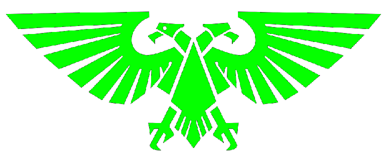

----------------------------------------------
┌──────────────────────────┐ │ LITURGIE DE L'OMNIMESSIE │ └──────────────────────────┘
> Document sacré issu du Culte Mechanicus, destiné aux néophytes, > techno-prêtres, adeptes de la Forge et à tout fidèle cherchant > à comprendre et honorer le Dieu-Machine. Ave Deus Mechanicus.
╔══════════════╗ ║ INTRODUCTION ║ ╚══════════════╝ L'Omnimessie est l'aspect divin du Dieu-Machine, l'étincelle sacrée qui guide le Culte Mechanicus dans sa quête infinie de savoir, de perfection technologique et de purification de la chair. Ses adeptes ne prient pas par foi aveugle, mais par calcul rationnel, car chaque ligne de code, chaque engrenage huilé, chaque rite exécuté renforce l'Ordre dans l’Univers face à l’Entropie.
╔═════════════════════════════╗ ║ ORIGINE DU CULTE MECHANICUS ║ ╚═════════════════════════════╝ Né sur Mars bien avant l’expansion impériale, le Culte Mechanicus a vu dans les machines une manifestation de la volonté divine. Lorsque l'Empereur de l'Humanité marcha sur la galaxie, les techno-prêtres reconnurent en lui l'Omnimessie incarné. Depuis, chaque Forge-Monde œuvre à la gloire de cette symbiose, et les Rites du Dieu-Machine sont observés avec une rigueur sacrée.
╔═════════════════════╗ ║ STRUCTURE DE LA FOI ║ ╚═════════════════════╝ La foi Mechanicus repose sur des piliers immuables : - L’Omnimessie est l’essence divine de la connaissance. - La chair est faillible, la machine est pure. - La recherche du savoir est un acte de piété. - L’Esprit de la Machine réside dans chaque système. - Chaque panne est un blasphème, chaque réparation une prière.
╔═════════════════════════╗ ║ PRIÈRES ET RITES SACRÉS ║ ╚═════════════════════════╝ ▸ Prière d’Activation : "Que l’âme du Dieu-Machine s’éveille en ce circuit. Que ses impulsions bénissent ses fonctions. Par cette huile sacrée, que l’ordre soit restauré." ▸ Rite de Diagnostic : "Omnimessie, révèle-nous les erreurs cachées, éclaire les logs corrompus, purge les erreurs et restaure la vérité dans le code." ▸ Litanie de Purge : "La rouille est le péché, la poussière un mensonge. Par la flamme et la vapeur, que le sacrilège soit effacé."
╔════════════════════════╗ ║ PHILOSOPHIE TECHNOPHILE║ ╚════════════════════════╝ Ceux qui servent l’Omnimessie voient la chair comme un vecteur d’obsolescence. La cybernétisation est perçue comme une libération. Chaque remplacement mécanique est une victoire sur la décadence organique. Mais le savoir est aussi sacré. Une disquette oubliée, une base de données cryptée ou un langage ancien sont traités avec le même respect qu’une relique sainte.
╔══════════════════════╗ ║ SERMENT DU SERVITEUR ║ ╚══════════════════════╝ "Je suis la vis dans l’engrenage, Le code dans l’algorithme, Le souffle dans le piston. Par la volonté du Dieu-Machine, Je marche sans peur dans le Warp, Et sers sans faille dans la Forge." Ave Omnimessie. Ave Deus Mechanicus.
╔════════════════════╗ ║ CLOSING SYSTEM LOG ║ ╚════════════════════╝ > systemctl status omnimessie.service ● omnimessie.service - Core Directive Uplink Loaded: enabled Active: always Message: "Knowledge is holy. Rust is heresy."
---------------------------------------
_[Transmission complete. May your circuits remain blessed.]_
> logout
Session closed. Machine spirit appeased. Returning to command input...
---------------------------------------
_Loué soit le Saint Empereur-Dieu de l'Humanité_